Unter
dem Menü „Optionen“ → „Routing Tabelle“ können alle
Routen numerisch angezeigt und die Werte für die Fahrstraße und die
Sensoren editiert werden (nicht editiert werden können: Adr(ID),
Start- und Ende-Button):
Unter
dem Menü „Optionen“ → „Routing Tabelle“ können alle
Routen numerisch angezeigt und die Werte für die Fahrstraße und die
Sensoren editiert werden (nicht editiert werden können: Adr(ID),
Start- und Ende-Button):SX4Draw Programm zum Generieren von „panel.xml“ Files
(Michael Blank, Stand 22. März 2019 – SW rev 0.53)
Mit dem „SX4Draw“ Programm kann graphisch ein Gleisbildstellwerk generiert werden, das dann als XML-File für SX4 und LanbahnPanel etc abgespeichert werden kann. Neben dem reinen Gleisbild können auch Fahrstraßen graphisch am Bildschirm entworfen werden und zu Zugfahrten und Fahrplänen verarbeitet werden.
Inhaltsverzeichnis
Installation/Aufruf des Programms 1
Start und Zeichnen von Gleisen, Sensoren und Signalen 2
SX-Adressen, virtuelle Adressen 3
Einzelne Panel-Elemente löschen 5
Verschieben von Panel-Elementen 5
Bearbeiten von ganzen Panels 5
Fahrstraßen graphisch erstellen 8
Welche Fahrstraßen sind schon eingegeben? 9
Zusammengesetzte Fahrstraßen 9
Das Programm ist ein Java-Programm, das als Zip-File heruntergeladen (zB „SX4Draw-0.43.zip“) und dann in ein Verzeichnis entzipped werden kann. In diesem Verzeichnis kann dann (unter Linux, Windows und MacOS – vorher muss Java installiert werden) das Programm mit
java -jar SX4Draw.jar
ausgeführt werden. Es öffnet sich eine leere Zeichenfläche, auf der ein Gleisplan gezeichnet werden kann:
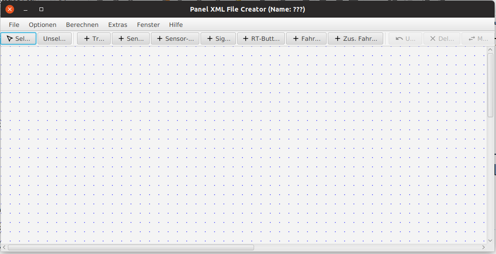
Mit den Buttons:
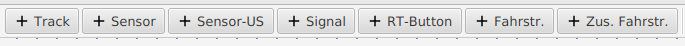
kann
jeweils ein „Panel-Element“ ausgewählt werden, also Gleise,
Sensoren, Signal, Fahrstraßen (Route) oder zusammengesetzte
Fahrstraße (CompRoute), die man zum Gleisplan (Panel) hinzufügen
kann.
Man beginnt am Besten mit dem Zeichnen der Gleise – nach Auswahl von „+ Track“ können Gleise als Linien gezeichnet werden. Mit Maus-Click wird ein Track begonnen (StartPunkt), dann bei gedrückter linker Maustaste an einen Endpunkt gezogen und Loslassen beendet das Gleis (den Track). Die Lage der Gleise wird hierbei auf 0 Grad, 45 Grad und 90 Grad eingeschränkt. Alle Gleise und Signale, Weichen, Fahrstraßentasten etc liegen auf einem 10x10 Raster (welches man aber auch deaktivieren kann) und werden als Vektor Graphiken gezeichnet, nicht als Bitmaps.
Auf die Gleise können dann zB Sensoren (auch Gleisbesetztmelder, Gleisbelegtmelder oder Gleisfreimelder genannt) gemalt werden, wenn vorher der „+ Sensor“ Button gedrückt wurde (oder der „+ Sensor-US“ Button – dieser wird als „US-Lampe“ im LanbahnPanel angezeigt).
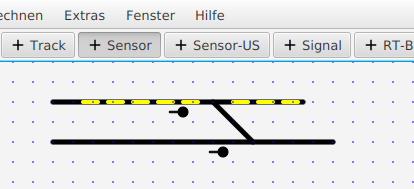 Ebenso können Signale hinzugefügt werden, es entsteht dann z.B.:
RT-Buttons (Fahrstraßentasten) werden benötigt, wenn man Fahrstraße verwenden will – jeweils eine am Beginn und eine am Ende einer Fahrstraße.
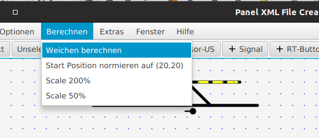
Weichen
müssen nicht als eigene Elemente eingegeben werden, sondern werden
vom Programm berechnet („Berechnen → Weichen berechnen“) , wenn
ein Gleis auf ein anderes trifft.
Das Ergebnis ist in diesem Fall:
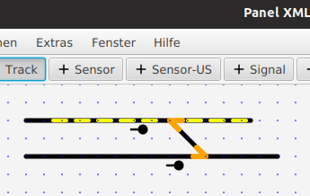
Die
erkannten Weichen werden in Orange markiert (diese Weichenerkennung
kann man auch mehrfach laufen lassen, wenn man weitere Gleise
hinzugefügt hat – die Daten der bereits vorher erstellten Weichen
bleiben erhalten.)
Doppelte Kreuzungsweichen und Kreuzungen werden dadurch unterschieden, dass die ersteren (=DKW) nur berechnet werden, wenn eines der beiden kreuzenden Gleise nicht durchgehend ist, sondern exakt am Kreuzungspunkt beendet und neu angefangen wird.
Die Adressen von „Aktiven Elementen“ (Signale, Sensoren, Weichen) können eingegeben werden, nachdem man durch Click mit der rechten Maustaste ein entsprechendes Element ausgewählt hat. Es öffnet sich dann ein Popup Fenster, in dem eine Adresse eingegeben werden kann (SX 0.. 106, Bit 1..8 – oder auch virtuelle Adressen >= 1200).
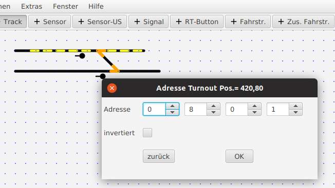
Adressen
werden als „lange Adressen“, die sowohl SX-Adresse wie SX-bit
enthalten, gespeichert – aus 80-Bit1 wird dann adr=“801“ (siehe
oben)1.
Bei Weichen kann auch „invertiert“ ausgewählt werden, dann werden die Weichenstellungen gerade/ abzweigend vertauscht.
Bei Signalen kann man zusätzlich die Orientierung wählen (0 Grad, 45 Grade, 90 Grad, 135 Grad, …) - und wählen, ob auch die Folgeadresse zum Signal gehört. Dies ist notwendig, wenn auch Hp2 angezeigt werden soll (gelb, State =2) – d.h. wenn das Signal 2 SX-Bits belegt.
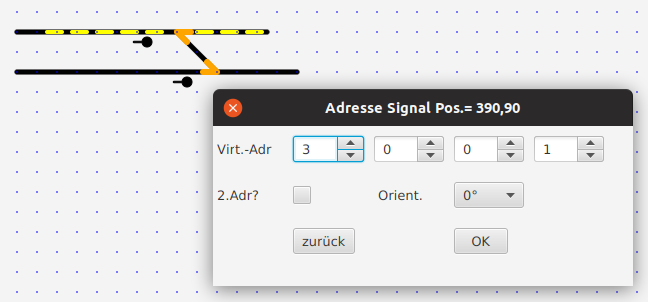
Nach dem Ändern von Weichen- und Signaladressen werden auch die entsprechenden Einträge in den Fahrstraßen-Tabellen automatische auf die neue Weichen/Signal-Adresse geändert.
Ein Panel abspeichern oder einen Panel-File laden kann man über das File-Menü.
Hierzu muss der „Select“ Button gedrückt sein – mit Maus Click kann man dann eines oder mehrere Elemente auswählen, sie werden dann ROT gezeichnet.
Drücken auf den Button „DELETE“ löscht jeweils eines der selektierten (roten) Elemente (also mehrfach drücken, wenn man mehrere ausgewählt hat, die man löschen möchte.)
Unter Optionen kann ein Panel-Name eingegeben werden, der mit im panel.xml File abgespeichert wird – und später dann im LanbahnPanel-Programm im Kopf angezeigt wird.
Nach Auswahl von einem oder mehreren Panel-Elementen per „SELECT“ können sie nach Drücken des „MOVE“ Buttons per Mouse-Drag verschoben werden (im 10 x 10 Raster, wenn nicht über „Optionen→Raster“ das Raster deaktiviert worden ist).
Der „Nullpunkt“ von Panels kann automatisch nach 20,20 verschoben werden – mit „Calc“→ „Norm Positions“, siehe
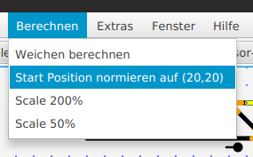
Die Ansicht auf dem Bildschirm kann im „Optionen“ Menü vergrößert und verkleinert werden – ohne dass wie bei „Scale“ die x- und y-Werte im XML File tatsächlich verändert werden – diese Funktion nennt sich Zoom In / Zoom Out, rechts „zoom“ links normale Anzeige.
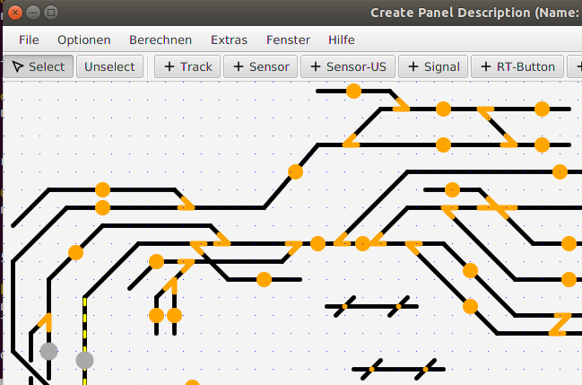
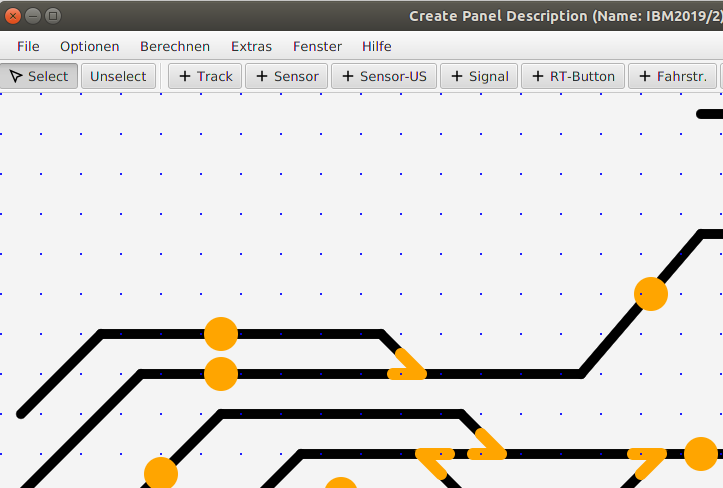
Mit „RouteButtons“ im Gleisbildstellwerk kann eine Fahrstraße eingestellt werden – von einem Start-Button (btn1) zu einem End-Button (btn2). Jede Fahrstraße muss einen Start-GBM und einen Stop-GBM haben, denn mit Hilfe des Stop-GBM wird zB die Fahrstraße beendet (=aufgelöst, wenn denn Stop-GBM von einem Zug belegt wird).
Unter
dem Menü „Optionen“ → „Routing Tabelle“ können alle
Routen numerisch angezeigt und die Werte für die Fahrstraße und die
Sensoren editiert werden (nicht editiert werden können: Adr(ID),
Start- und Ende-Button):
Die Definition der Signalstellung kann (nur direkt beim Erstellen) durch mehrfaches Klicken auf das Signal erfolgen. Wenn das Signal 2 Adressen hat, so sind 4 Stellungen möglich (sonst nur 2):
Rot=0 oder Grün=1 oder Gelb=2 oder pink=3 („pink“ kann zum Beispiel auf der Anlage 1) Anzeige der „feather“ (nur UK) bedeuten oder 2) Rangierfahrt frei), es andere Farben, 4 mögliche, wenn das Signal 2 Adressen hat - sonst nur rot/grün)
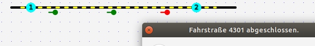
Nach Eingabe von Adressen für Sensoren, Weichen und Signale können Fahrstraßen graphisch erstellt werden, in dieser Reihenfolge:
1. Start Button clicken (also auf den Route-Button, bei dem die Fahrstraße starten soll)
2. dann auf alle Elemente klicken, die zu der Fahrstraße gehören sollen, also auf Sensoren, Weichen, Signale (bei den Weichen kann dabei auch der Zustand gewählt werden, indem man auf das Ende des abzweigenden bzw. durchgehenden Track der Weiche klickt (=grün)
3. Ende Button klicken, dann wird die Fahrstraße gespeichert. (im Fahrstraßen-Editor können auch Weichen- und Signalstellungen korrigiert werden)
Während des Erstellens werden die gewählten Elemente in Türkis markiert:
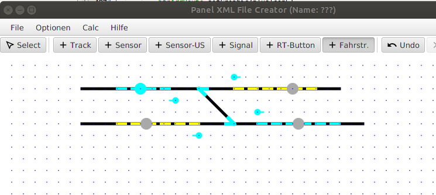
Nach klick auf den „Ende Button“ sieht das im Fahrstraßen-Editor so aus:

Mit „rechter Maustaste“ auf eine Zeile im Fahrstraßen-Editor kann man
a) Fahrstraßen löschen und
b) Fahrstraßen „debuggen“, man kann sich eine Fahrstraße anzeigen lassen, hierbei werden alle Elemente markiert, die Weichen- und Signalstellungen angezeigt und der Start-Btn mit „1“ und der End-Button mit „2“ markiert:
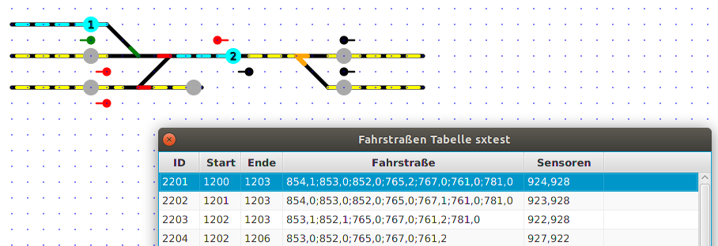
Wenn eine andere Fahrstraße gewählt wird, so wird die aktuell markiert wieder „ent-markiert“.
Ein Klick auf die rechte Maustaste bei Fahrstraßen-Tastern (RouteButtons) bewirkt, dass angezeigt wird, welche Fahrstraßen von dieser Taste ausgehen. Die Start-Taste wird mit „1“ markiert, die möglichen Fahrstraßen-Ende-Taster mit „2“, ein Beispiel:

Damit die Erstellung von Fahrstraßen „schneller von der Hand geht“, kann man je 2 Fahrstraßen auch zusammenfassen zu einer „Zusammengesetzten Fahrstraße“ (CompRoute).
Hierzu wählt man im graphischen Editor „+ Zus. Fahrstraße“ aus und klickt auf den „Anfangs-Fahrstrassen Button“ der Fahrstraße 1, dann auf den „End-Button“ der Fahrstraße 2 – dann wird eine neue Zusammengesetzte Fahrstraße aus „Fahrstraße 1 plus Fahrstraße 2“ generiert. Diese kann ebenfalls „debugged“ werden.
Zusammengesetzte Fahrstraßen, die aus mehr als 2 Einzelfahrstraßen bestehen, sind NICHT möglich.
Fahrten (Zugfahrten) sind die Kombination aus einer Fahrstraße und einer Lok (mit Richtung und Geschwindigkeit) – sie werden in einer Tabelle editiert:
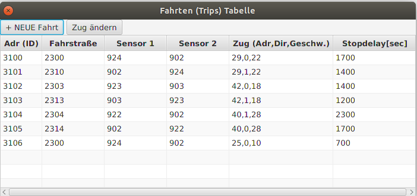
Einen kompletten Zug ändern kann man in der Fahrten Tabelle mit „Zug ändern“ - dann öffnet sich eine Maske mit dem „alten“ Zug (incl Geschwindigkeit) auf der linken Seite und dem „neuen“ auf der rechten Seite. Hier kann man auch nur die Geschwindigkeit ändern – oder nur die Richtung (oder alles).
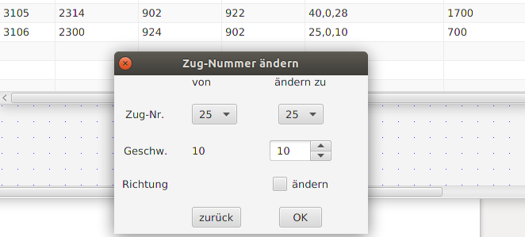
Fahrpläne sind eine Abfolge von Fahrten, siehe rechts in der Graphik eine Übersicht.
Sie können im SX4 Programm einen Fahrplan (der im panel.xml File enthalten ist) starten – dann werden die Fahrten in der gespeicherten Reihenfolge ausgeführt – vorausgesetzt, auf den Start-Sensoren der jeweiligen Fahrstraße steht jeweils ein Zug (sonst weiss das Programm nicht, welche Lok es beschleunigen oder abbremsen soll).
Damit auf die einzelnen Loks im LanbahnPanel-Programm schneller zugegriffen werden kann, gibt es auch eine Tabelle mit allen verwendeten Loks – zusätzlich zur Adresse kann auch eine „Masse“ (1..5) definiert werden, die die Verzögerung definiert beim Anfahren und Anhalten per LanbahnPanel oder per Fahrplan (und ein sprechender Name ist ebenfalls möglich).
Eine Suche nach Panel-Elementen mit einer bestimmten Adresse kann man aktivieren per „Extras→Suche nach Adressen“ Menü. Dabei kann entweder nach der exakten Adresse gesucht werden (z.B. 937 = Adr93, bit7) oder auch nach SX-Adresse allein, wenn man die letzte Ziffer durch ein Fragezeichen ersetzt („93?“ → alle Elemente, deren SX-Adresse gleich 97 ist).
Als Ergebnis der Suche werden die entsprechenden Paneel-Element rot markiert.
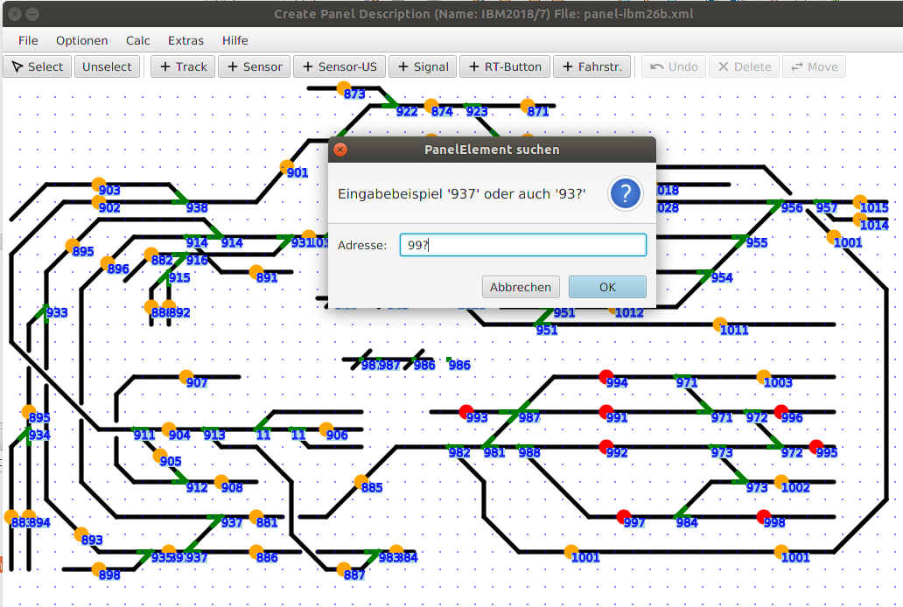
…
Die zu stellende Fahrstraße ist in einer String-Variable „route“ definiert, jeweils als Folge von Wertepaaren (SX-Addresse,Zustand), zum Beispiel:
<route id="2201" btn1="1200" btn2="1203" route="854,1;853,0;852,0;765,2;767,0;761,0;781,0" sensors="924,928" offending="" />
Das heißt also zB: Weiche 85.4 wird auf 1 (=abzweigend) gestellt, Weiche 85.3 wird auf 0 (=gerade) gestellt und so weiter. (auch die Signalstellungen sind hier definiert). Die Definition der Weichenstellung kann auch graphisch erzeugt werden, die der Signal nicht – sie muss von Hand in die Fahrstraßentabelle eingetragen werden.
Unter „sensors“ sind jeweils der Start- und End-Gleisabschnitt der Fahrstraße definiert (bzw. die entsprechenden Belegtmelder-Adressen). Zum automatischen Fahrbetrieb (Fahrplan) sind Start- und Ende-Sensor zwingend erforderlich!
1) Aus einem Panel.xml File eingelesen werden aber auch sxadr und sxbit (=altes Format), zum Beispiel wird
<… sxadr=“94“ sxbit =“7“ /> später abgespeichert als adr =“947“.